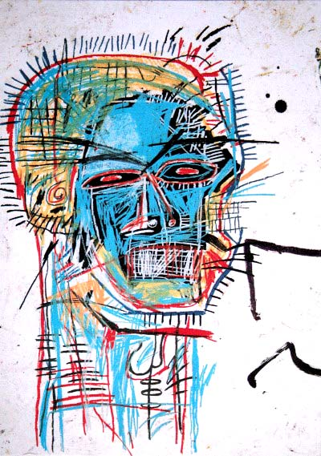
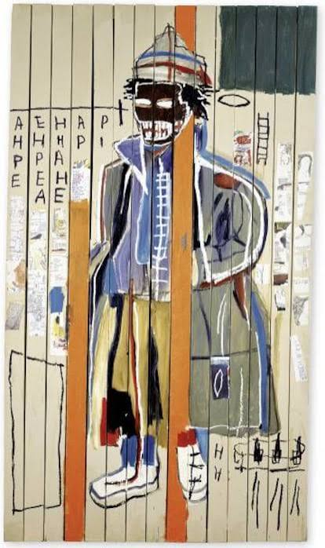

Hablemos de Basquiat

Para esta entrevista, conversamos con tres voces: un historiador del arte afroamericano, un diseñador gráfico que trabajó en los archivos de la fundación Basquiat, y un tipógrafo mexicano que estudia la escritura en el trabajo del artista. Lo que sigue es una conversación editada sobre el diseño que existe dentro del caos de Jean-Michel Basquiat.
El grafismo como resistencia
Margen*: ¿Es Basquiat un pintor que usa letras, o un diseñador que usa pintura?
Dr. Amos Richardson: Es una falsa dicotomía impuesta por la academia occidental. Basquiat no respetaba esas fronteras porque esas fronteras fueron construidas para excluirlo. Para él, la palabra, el símbolo, la figura y el color eran herramientas igualmente válidas de un mismo arsenal. Lo que llamamos "diseño" en su obra —la tipografía, la composición, el uso del copyright— no es accidental. Es estrategia. Cuando pinta "Copyright" sobre una corona, está hablando de quién posee la cultura negra. Eso es diseño de información con carga política.
La tipografía del cuerpo
Margen*: ¿Qué pasa con su letra? No parece tipografía en el sentido académico.
Rodrigo Cruz (tipógrafo): Porque no lo es. Basquiat escribía con el cuerpo, no con la mano. Sus letras tienen el peso de alguien que está apurado, que tiene mucho que decir y poco tiempo. Pero eso no significa descuido. Hay un ritmo. Si transcribes sus textos a una tipografía limpia, pierden toda su energía. El "error" es el diseño. La sangría irregular, las letras que se encogen o se hinchan, las palabras que se comen entre sí: eso es intención, no incapacidad.
"Cuando pinta 'Copyright' sobre una corona, está hablando de quién posee la cultura negra."

De SAMO a las marcas de lujo
Margen*: Basquiat es hoy una marca. ¿Traiciona eso su espíritu?
Dr. Richardson: Esa es la pregunta que todos hacemos. Basquiat era profundamente crítico del capitalismo, pero también quería dinero. No era un santo; era un artista joven que quería comer y pagar renta. El problema no es que se venda su obra; el problema es quién la vende y para qué. Cuando una marca de moda de lujo estampa un Basquiat en una bolsa de mil dólares sin contexto, no está honrando al artista. Está consumiendo su rebeldía como estética. Es el equivalente a poner un leopardo en una jaula de oro: sigue siendo prisión.

Lo que le debemos
Margen*: ¿Qué lección concreta le queda al diseñador contemporáneo?
Rodrigo Cruz: Que la autenticidad no es un estilo que puedas aplicar. Basquiat no estaba haciendo "arte raw" como tendencia; estaba siendo él mismo en un sistema que no estaba preparado para recibirlo. El diseñador puede aprender de eso: que el riesgo de ser genuino, aunque sea incómodo, es menor que el riesgo de ser olvidado por ser genérico.
Dr. Richardson: Y que el diseño puede ser agresivo. No todo debe ser "limpio" o "usable". A veces, el diseño más honesto es el que incomoda, el que interrumpe, el que no deja al espectador en paz. Basquiat no pintó para que te sintieras bien. Pintó para que pensaras. Eso es un estándar que deberíamos recuperar.